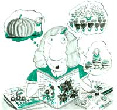
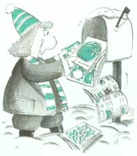

19 Ways to Ensure Success in Mail-Order Gardening
If there’s one thing Mother Earth News readers receive more of than Christmas cards, it's gardening catalogs. And what better time for these catalogs to arrive in the mail than in the dead of winter, when frozen or wet ground keeps you out of the garden? Unless you're lucky enough to live near a large garden center, you'll have a hard time getting heirloom varieties or the seasons hottest hybrids, except through catalogs. The quality of products you can get by mail is often better, too. Bulbs and seeds displayed in retail racks won’t do nearly as well as items that remain properly stored until your order is shipped. Catalogs carry a greater variety not only of seeds and plants, but also of gardening supplies and high-quality, long-lasting tools. But mail-order gardening can be more aggravation than convenience, unless you follow these common-sense rules:
1. Buy from firms with established reputations.
One way to check up on a mail-order company is to contact the Better Business Bureau in the city where the company is located. The BBB can tell you how cooperative the firm is in settling problems and whether or not it has unresolved complaints against it.
Barbara Barton, author of Gardening by Mail (see "Sources" on page 74), recommends ordering with caution from any catalog that does not list the name of the proprietor and a phone number. "After all," she says, "these people are in business and should be willing to communicate with their customers."
2. Order from several different catalogs.
Until you find a firm that carries everything you need, and that you enjoy dealing with, spread your orders around. You'll be surprised at the differences between companies. One important thing to look for is a firm that provides planting instruction that is compatible with your degree of gardening knowledge. Some companies offer comprehensive instructions; others supply no directions at all.
Another thing to watch for is proper identification of seeds and plants. I stopped ordering from one business that ships inadequately identified seed packets. A good company will identify items clearly and seal sensitive seeds in moisture-proof foil.
3. Don't be swayed by offers of free gifts.
Since I have yet to receive a gift I had to pay for, offers of "free gifts" put me off. Besides, the ones that I have received over the years were either inferior in quality or abysmal failures. Consider gifts that arrive with your order to be nothing more than a bonus, rather than an incentive.
4. Catalog your catalogs.
If you pile all your catalogs in a corner, you'll have to paw through the whole mess to find a specific one. And it will only get worse as you get more. Filing catalogs in alphabetical order doesn't work, either; For one thing, putting them back into order after browsing through them is time-consuming. Besides, who can remember whether Seeds Blum goes under "Seeds" or "Blum," and whether W. Atlee Burpee goes under "W" or "Burpee"?
Instead, assign each catalog a number, printed with a marker on the cover, and file the catalogs in numerical order. At the front of the file, keep an alphabetical list that tells you where to find each specific catalog. When an update comes in, all you have to do is look up the number, jot it on the cover, and replace the old catalog with the update.
5. Read catalog descriptions carefully.
The variety of plants and seeds offered by mail can be overwhelming. Narrow your options by eliminating cultivars that aren't rated for your climate zone or the length of your growing season. Then consider why you're growing the plant. Do you want vegetables that taste good when fresh and that ripen over a period of time or do you want varieties you can harvest all at once and that hold up well when canned?
6. Try different varieties.
Unless you already know which cultivars you like best and which ones do best in your area, the only way to find out is by experimenting. Your county extension agent can give you a list of plants that do well in your neck of the woods. But-and this is especially true for fruits and vegetables-the varieties listed are likely to be commercial hybrids that aren't always the best choices for a home garden.
Even after you find something you really like, or that grows well for you, don't hesitate to keep trying new things. But plant the tried-and-true variety along with the new one, just in case the newcomer turns out to be a disappointment.
7. Base your selections on facts, not fantastic claims.
It's fun to try new or improved varieties, but remember: If it sounds too good to be true, it is. Besides, if a plant was so wonderful, it would be more widely known instead of being relegated to an obscure catalog listing.
Unbelievably low prices fall into the category of fantastic claims. Plants and seeds are priced according to their newness or rarity, and the size or quantity you buy. If you simply must have the latest cultivar, or a plant that's rare because it's difficult to propagate, or trees and shrubs that already have several years of growth, either pay an appropriate price or be disappointed with your purchase.
8. If you don't want substitutes, say so.
Some firms will substitute the next nearest thing if they're out of an item you ordered. I once sent for a large quantity of short carrots to grow in my shallow soil, but instead received an unsuitably long variety. After returning the seeds, I had to write four letters to obtain a refund. Now I avoid such hassles by clearly specifying "no substitutions."
9. Fill in your order form completely.
Most firms ship by UPS, so be sure to include a shipping address if it's different from your postal address. If you live on a rural route (RR or RFD), include a street name as well. Shippers who mistake rural-route numbers for post-office-box numbers will send by mail rather than UPS, delaying delivery. If your street doesn't have a name or is off the beaten path, include a descriptive landmark such as "near the Pleasant Hill Church."
10. Double-check your figures.
Before sending in your order, double check your addition and be sure you have included tax and shipping charges. Some firms will bill you if you make a mistake; others won't ship until they have all their cash in hand.
Don't take shipping fees for granted, either. Some firms charge excessive amounts, so shop for comparison. Also, watch out for extra "insurance" charges. According to the Direct Marketing Association, it's the company's responsibility to insure delivery. Besides, orders totaling less than $100 and sent by UPS are insured by the carrier at no additional cost.
11. Don't send cash through the mail.
Dollars have a funny way of disappearing without leaving a trace. Your cash won't necessarily go astray at the mail-order firm, but somewhere in transit. Then what proof will you have that you sent it? A check may not be the answer, either. It will delay your order when you buy from a firm that requires checks to clear before shipping. Sending a money order speeds things up. Using a credit card speeds things up even more, since you can call in your order.
If you don't have a credit card, you may be tempted to call in your order C.O.D. (collect on delivery). This speeds things up, but you'll pay a pretty penny for the privilege. The shipper will tack on a few extra dollars for C.O.D. charges (the exact amount depends on the total of your order) and, if you pay your carrier with cash instead of a check, you'll incur an additional $.75 money-order fee. Some shippers won't send C.O.D., fearing you may just change your mind and then refuse the order when it comes.
12. Keep a copy of your order.
Nearly every time I've been too lazy to make a copy of an order, something went wrong and I had absolutely no record to help me straighten things out. Even when nothing went wrong, I'd have a hard time placing a second order, since information on shipping and handling is usually given on the one and only form that comes in the catalog.
Always photocopy an order before sending it in, or phone in your order and file the original. Then you can easily keep track of what you ordered, when you ordered it, whether or not you got it, and whether or not unauthorized substitutions were made. Include on the form the page number on which each item appears and the name of the item (even if the form asks only for a catalog number). This extra information doesn't take long to include, and it becomes a real time-saver if you have to look up something later.
13. Order early.
A supplier may be out of stock or mistakenly send a wrong item. Unless you order early, it may be too late to reorder for the current season. Ordering early may save you money as well-to reduce the seasonal rush, some businesses offer an early-bird discount. Ordering early doesn't mean you'll get plants or sets out of season and have to store them. Simply specify a shipping date.
14. Request a specific delivery date.
Specifying a shipping date is important if you have a greenhouse where you can enjoy off-season planting, or your microclimate differs from the standard hardiness zone map. In my area, deciduous trees and shrubs have to be planted in early winter, since later (when trees are normally shipped) the soil is either frozen or the weather turns too warm too fast. Spring seeding has to be done early so plants will be well established before the heat hits. By specifying a shipping date, I avoid frustration in trying to keep my new plants alive.
Plan to be around when your shipment arrives, or arrange for a neighbor to take it in for you. You don't want to come back from vacation to find that seeds, plants, or sets have been sitting on your doorstep for days in sweltering or freezing weather.
15. Check your order when it's delivered.
As soon as your shipment arrives, check it against your order to be sure you got everything. If the package is damaged, open it while the carrier is there as a witness to any problems. If anything is remiss or missing, file a claim right away (see "How to Get What You Pay For" on page 70).
16. Date seed packets as they arrive.
Some seed packets come stamped with the date or a notation such as "packed for the 1993 planting season." Others don't. By dating all packets, you'll know in future seasons which leftover seeds are still viable and which ones need to be reordered.
17. Plant live plants as soon as possible.
Live plants, even deciduous trees and shrubs, do better in the ground than sitting in a shipping container. When planting right away, something still might not grow. If so, the Mailorder Association of Nurseries suggests you notify the supplier.
18. Keep a record of what you plant.
Years ago I discovered two varieties of tomato that I especially liked. One was a prolific cherry tomato that was quite tasty, the other was a container tomato that bore right through the Christmas season. Unfortunately, in those days I didn't keep very good records. So despite all of my best efforts, I've never again found those two varieties.
An accurate record of what you plant should include how well it did, how well you liked it or didn't like it (so that you won't inadvertently repeat a failure), and how much seed you used. Otherwise each order involves more guesswork than careful planning.
19. Enjoy!
The best part about mail-order gardening is that you can do it stretched out on the couch in front of a warm fire, saving up your energy for those not-so-lazy days of summer gardening.
Mail-ordering early doesn't mean you'll get plants out of season.
Sources:
If you aren't already getting more catalogs than you need, these sources will help you find a myriad of gardening-related, mail-order items in the U.S. and Canada:
"The Complete Guide to Gardening and Landscaping by Mail" (free 22-page booklet), Mailorder Association of Nurseries, 8683 Doves Fly Way, Laurel, MD 20723; 301-490-9143.
Gardening by Mail: A Source Book by Barbara J. Barton (390 pages, $21.95 postpaid), Capabilities Books, 2379 Highway 46, Deer Park, WI 54007; 800-247-8154.
Garden Seed Inventory (sources for non-hybrid vegetable seeds, $22 postpaid), Seed Saver Publications, RR 3, Box 239, Decorah, IA 52101; 319-382-5990.
If, on the other hand, you're tired of being inundated with catalogs, send your name and address to Mail Preference Service, Direct Marketing Association, 11 West 42nd Street, PO Box 3861, New York, NY 10163-3861. MPS will notify its 3,000-plus members that you want your name off their mailing lists, but you'll still get catalogs from firms with which you continue doing business.
|
 |
 |
|